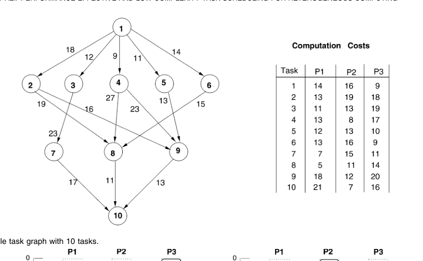
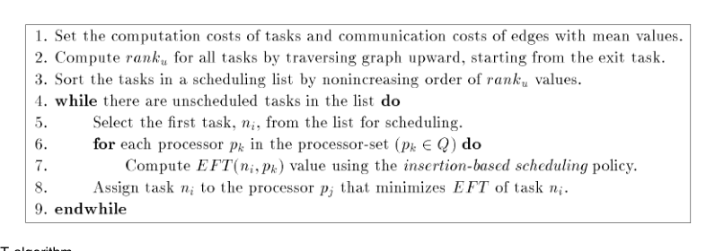
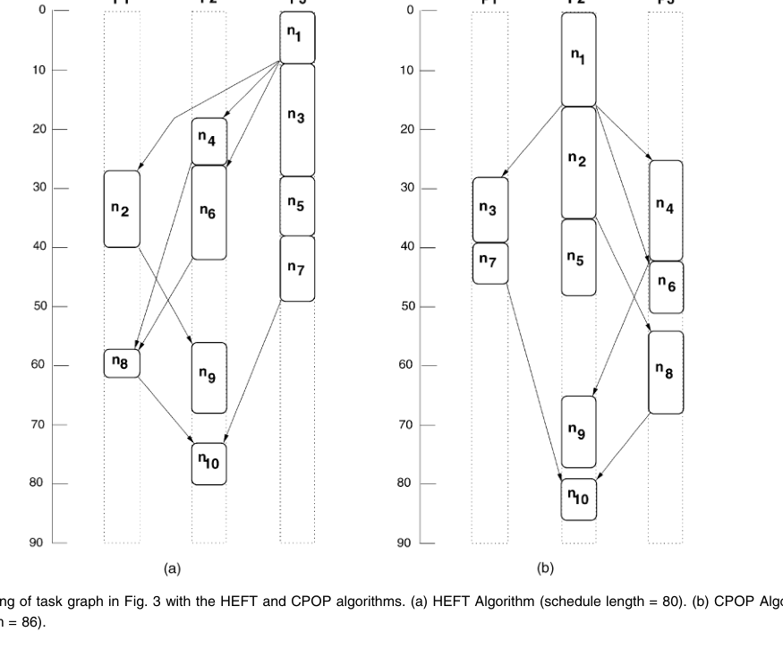
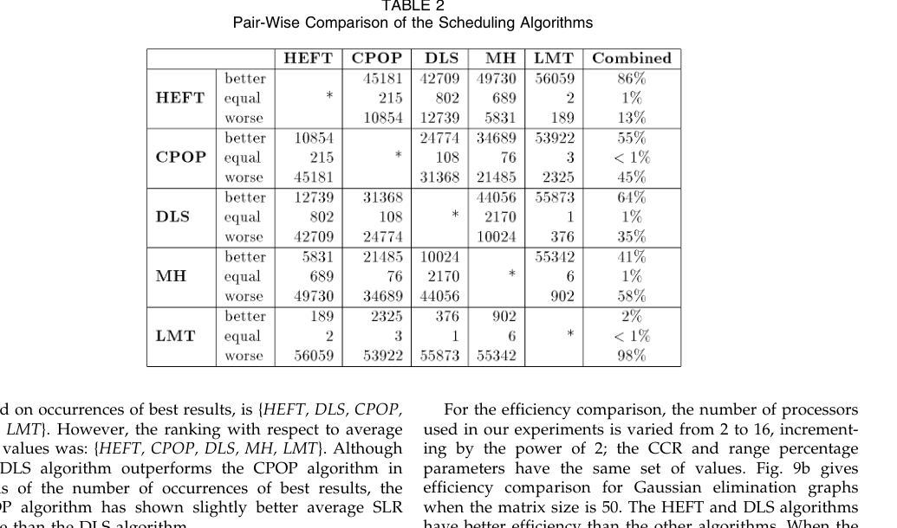
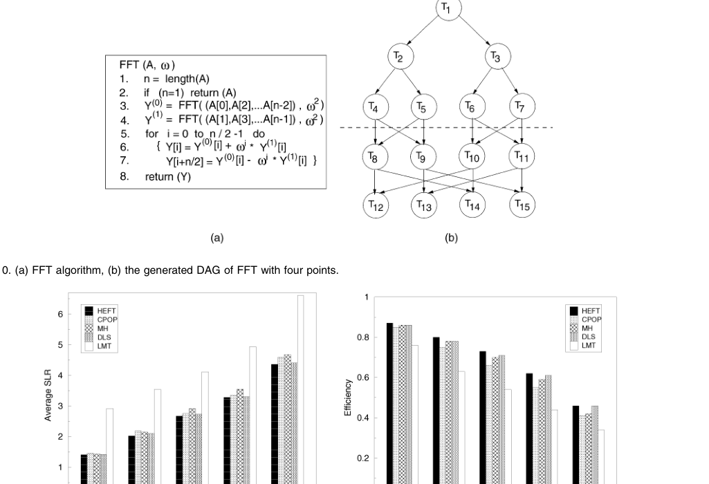

HEFT：面向异构计算系统的高性能低复杂度任务调度中文翻译稿
摘要。本文研究异构计算环境中的静态任务调度问题。应用被建模为带权有向无环图（DAG），节点代表任务，边代表任务之间的数据依赖和通信开销；目标是在有限数量的异构处理器上为任务选择执行顺序和处理器，使总完成时间尽可能短。作者提出两个启发式算法：Heterogeneous Earliest-Finish-Time（HEFT）和 Critical-Path-on-a-Processor（CPOP）。HEFT 用 upward rank 给任务排序，再用 insertion-based earliest finish time 为任务选处理器；CPOP 用 upward rank 与 downward rank 的和识别关键路径，并倾向把关键任务放在同一处理器上。随机图和真实应用图上的实验表明，这两个算法在 schedule length ratio、speedup、最佳结果次数和调度时间上明显优于当时的多个基线，其中 HEFT 通常最稳健。
1 引言
异构计算系统由性能不同、互联方式不同的处理资源构成。对并行和分布式应用来说，仅有资源还不够，关键是把应用中的任务放到合适的处理器，并安排满足依赖关系的执行顺序。静态调度假设任务执行时间、任务间通信量和依赖关系在编译期或调度前已知，因此可以把应用表示为 DAG。
一般任务调度问题是 NP-complete，即使在某些受限情形下也很难求精确最优解。因此，实际系统依赖启发式算法。已有许多算法面向同构处理器，或在异构处理器上需要较高调度开销。本文的目标是在调度质量和调度复杂度之间取得更好的平衡。
2 问题模型
每个任务节点在不同处理器上有不同计算成本，边表示前驱任务输出到后继任务所需的通信成本。如果两个相邻任务被放在同一处理器上，通信成本可视为零；若放在不同处理器上，则需要计入数据传输时间。一个合法 schedule 必须满足所有前驱约束，并且每个处理器同一时刻只能执行一个任务。
论文主要用 schedule length、schedule length ratio（SLR）、speedup、最佳结果频率和调度时间来评估算法。SLR 用实际调度长度除以关键路径的理论下界，越接近 1 越好。

3 HEFT 算法
HEFT 分为两阶段。第一阶段是任务排序。算法先计算每个任务的 upward rank：它等于该任务平均计算成本加上从该任务到出口任务的最长后继路径成本。rank 越高，说明任务越靠近关键路径前部、越可能影响整体完成时间。HEFT 按 upward rank 从大到小生成任务列表。
第二阶段是处理器选择。对任务列表中的每个任务，算法尝试把它插入到每个处理器当前空闲片段中，计算满足前驱约束后的 earliest finish time，然后选择使完成时间最早的处理器和时间槽。这个 insertion-based 策略比简单追加到处理器末尾更灵活，因为它能利用已有任务之间的空洞。

4 CPOP 与对比
CPOP 同样是列表调度，但排序依据是 upward rank 与 downward rank 的和。这个值在关键路径任务上相对稳定，因此可用来识别 critical path。CPOP 的处理器选择与 HEFT 不同：关键路径上的任务会被映射到使关键路径总执行时间最小的同一处理器上，非关键任务再按 earliest finish time 安排。

这种设计说明了两种思路的差异：HEFT 更强调每一步的局部最早完成，CPOP 更强调保持关键路径一致性。实验中 CPOP 有时有效，但在处理器异构性和通信成本较复杂时，把关键任务固定到同一处理器并不总是最优。
5 实验结果
作者使用可控的随机 DAG 生成器，改变任务数、图形结构、通信计算比（CCR）、处理器异构程度等参数，并加入真实应用图进行验证。对比算法包括 MCP、ETF、DLS、MH、LMT 等。整体结果显示，HEFT 在大多数情形下有更低 SLR、更高 speedup 和更短调度时间；CPOP 在部分场景表现接近 HEFT，但稳定性略弱。


6 局限与选题启发
HEFT 的前提是 DAG、计算成本和通信成本已知，适合静态工作流。它没有处理运行时分支概率、输出长度不确定、在线负载波动、KV cache 状态或 LLM serving 中的排队效应。尽管如此，HEFT 仍是异构 DAG 调度的经典基线，后续很多 workflow scheduling、cloud scheduling 和 heterogeneous serving 工作都可与它建立联系。
对本仓库方向的意义。如果后续研究 agentic workflow、conditional DAG 或多模型 LLM serving，HEFT 可作为“已知 DAG + 异构 executor + makespan 最小化”的基础参照。新的工作可以在它之上加入概率分支、动态 token 长度、cache locality、GPU/CPU/SSD 多级状态和在线负载预测。
参考说明
参考文献保留在原 PDF 中。本文覆盖摘要、问题模型、HEFT/CPOP 方法、实验结论和与本仓库研究方向相关的启发。
论文问答
Q1：这篇论文试图解决什么问题？
它试图解决静态 DAG 应用在异构处理器上的任务排序和处理器分配问题。目标是在已知计算成本、通信成本和依赖关系的前提下，快速生成接近最优的 makespan，而不是求代价很高的精确最优解。
Q2：有哪些相关研究？
相关研究包括 list scheduling、clustering、duplication-based scheduling、MCP、ETF、DLS、MH、LMT 等经典 DAG 调度算法。HEFT/CPOP 的贡献是在异构处理器场景下兼顾调度质量和低复杂度。
Q3：论文如何解决这个问题？
HEFT 先用 upward rank 衡量每个任务到出口节点的关键程度，再按 rank 降序调度；每个任务选择能得到 earliest finish time 的处理器和插入位置。CPOP 则用 upward rank 与 downward rank 之和识别关键路径，并倾向把关键任务放在同一处理器上。
Q4：论文做了哪些实验？
论文用随机 DAG 生成器和真实应用图评估算法，改变任务数、通信计算比、图形结构和异构程度。指标包括 schedule length ratio、speedup、最佳结果频率和调度时间，并与多个已有启发式算法比较。
Q5：有什么可以进一步探索的点？
可以进一步探索不确定 DAG、在线到达、分支概率、执行时间分布和缓存状态下的 HEFT 扩展。对于 LLM workflow，HEFT 可作为基础结构，但需要加入 token 长度、模型选择、KV cache locality 和异构 GPU 队列。
Q6：总结一下论文的主要内容。
HEFT 的核心是一个简单有效的异构 DAG list scheduling 基线：先找关键任务，再为每个任务选最早完成的位置。它至今仍是许多 workflow scheduling 工作的重要对照。